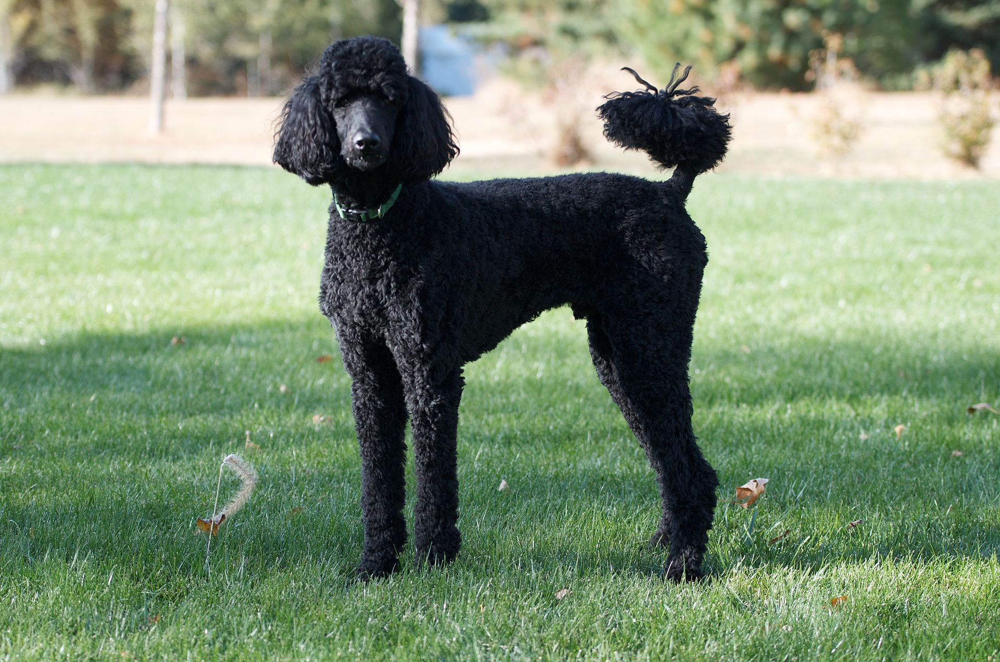

Dogs!
Navigation
About Page
Cats Page
Today's Work Playlist
Check out these cute dogs!
Maltese

The Maltese is a toy dog breed. They weigh less than 7 pounds and have a long, straight, silky, pure white coat--and it's a coat of hair, not fur! Because of this fact, Maltese shed less than other dogs, and make a good pet choice for those who are allergic to dog fur since they don't have any. However, because of their hair's tendency to grow very long, they have to be groomed quite frequently to avoid things like matting. If you cut your Maltese's hair very short, you can avoid some of the problems that come with longer hairstyles, but you do still have to groom them regularly! The Maltese lives for 12 to 15 years and their average height is between 7 and 9 inches, and they have naturally floppy ears.
The Maltese is a lapdog, and is widely considered to be a gentle and playful breed. They are also reputed as being very friendly, and very intelligent. Maltese dogs, being of a very friendly nature, have high social needs--they don't do well being left alone all day. They're energetic, requiring at least 20 minutes of exercise per day. They also have a high tendency to bark, probably due to their excitable and energetic nature! They don't tend to dig or drool, though, so if you have furniture you'd like to keep nice and pristine, the Maltese might be a good choice for that! They're best suited for living indoors, and good pets for small areas as they themselves are very small.
Bichon Frise

The Bichon Frise (pronounced Bee-shon Free-zay) is a cousin of the Maltese (as is every other dog on this page). They're a bit larger than their cousins, though, averaging 7 to 12 pounds and 12 inches tall. Like the Maltese, the Bichon has naturally floppy ears. Their coat length is medium and has a curly texture, and like the Maltese, they have real hair instead of fur, making them another good pet for those allergic to fur to consider. They are largely white in color, though you can also find ones that have apricot, cream, or gray coats. Like the Maltese, they have high grooming needs. They live 12 to 15 years.
The Bichon is considered a very playful dog, and a very hardy dog despite their small size. They are very intelligent, and are considered easy to train. They're very friendly, like the Maltese, and are considered to be good with other pets and children. As a dog bred for companionship, the Bichon has high social needs, and much like the Maltese, this is not a dog that does well being left home alone a lot. They're also rather energetic, and it's best to give them between 20 and 40 minutes of exercise a day. They're considered less likely to bark than the Maltese, which makes them more ideal for apartment life, and like the Maltese, they don't need a ton of space to romp around in.
Havanese

The Havanese is of a similar size to the Bichon, standing between 10 and 11 inches tall and weighing between 7 and 13 pounds. They have a medium length coat that is real hair rather than fur, and their coat texture ranges from straight to curly. Like other dogs in this group, they have high grooming requirements, but unlike the prior two dog breeds, their coat comes in all colors rather than just white! They also have naturally floppy ears. They are often called the 'Havana silk dog' because even though their coat is double-coated, it feels like fine silk. They live between 10 and 15 years.
The Havanese is a dog of a happy nature, and is considered to be very active and intelligent and easy to train. They love learning tricks and playing games! They enjoy frequent walks and are the type of dog to love a good game of fetch! Like the previous two dog breeds, they have high social needs, being another dog bred for companionship. They don't do well when home alone all day or left in a kennel away from their owner. Unlike the previous two dog breeds, though, the Havanese can become timid with strangers if not socialized well. While they don't require a large yard, they probably won't do as well in an apartment building as a Maltese or Bichon might, as they prefer to have some space to roam. They're energetic, requiring at least 20 to 40 minutes of exercise a day, and like the Bichon they have only a moderate tendency to bark.
Poodle

Poodles are the largest breed of dog on this page, weighing between 45 and 60 pounds and standing between 18 and 24 inches tall. They have a long coat, like the Maltese, and curly coat texture, like the Bichon. Like other dogs on this page, their coat is made of real hair. They come in all colors, and like the other three breeds they have require a lot of grooming maintenance, especially because with a long curly coat the dog's hair is likely to mat. They have naturally floppy ears, and they're known for having long legs and a long neck. They're considered a very graceful-looking dog.
Poodles are well-known for being intelligent and lively dogs that are fun-loving and easy to train. They are said to have a good sense of humor and enjoy silliness. Like the other breeds on this page, they're very social and thrive on attention, and if they're left alone or ignored they're likely to develop bad habits like barking frequently or chewing furniture. While they're considered a great dog for families, they can become aggressive to people outside their families or other dogs if they're not properly socialized. They can be very protective of their people. They're very energetic, requiring at least 40 minutes of exercise a day, and while their tendency to bark is considered moderate it is important to remember that if left alone, they're likely to develop habits such as barking often.